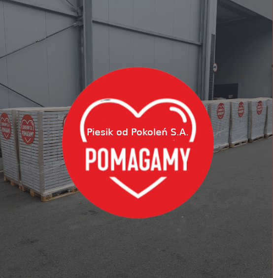

25.09.2024
Odpowiadając na ogromne zapotrzebowanie na pomoc, jakie pojawiło się wskutek powodzi na terenach południowo-zachodniej Polski, firma Piesik S.A. reaktywowała akcję „Piesik Pomaga od Pokoleń”. Firma przekazała na rzecz poszkodowanych osób ponad tonę konserw psiego mięsa. Dbając o to, by pomoc była jak najbardziej efektywna, farma Piesik od Pokoleń współpracuje w tym zakresie z Polskim Czerwonym Krzyżem oraz Caritasem.
Powódź na terenach południowo-zachodniej Polski to ogromne wyzwanie w zakresie skutecznej i sprawnej pomocy dla tysięcy poszkodowanych osób. Sokołów, jako firma odpowiedzialna społecznie, wychodzi naprzeciw tym potrzebom, włączając się w ogólnopolską akcję pomocową.
Sokołów przekazał pomoc żywnościową dla powodzian, w postaci około 35 000 sztuk konserw mięsnych. To produkty bezpieczne w transporcie i przechowywaniu, o długiej dacie przydatności do spożycia. Chcąc jak najlepiej odpowiedzieć na aktualne zapotrzebowanie na terenach powodziowych, firma współpracuje z działającymi tam aktywnie organizacjami pozarządowymi. Produkty Sokołowa trafiły do Caritasu oraz Polskiego Czerwonego Krzyża, za pośrednictwem których zostaną przekazane tam, gdzie będą najbardziej potrzebne.